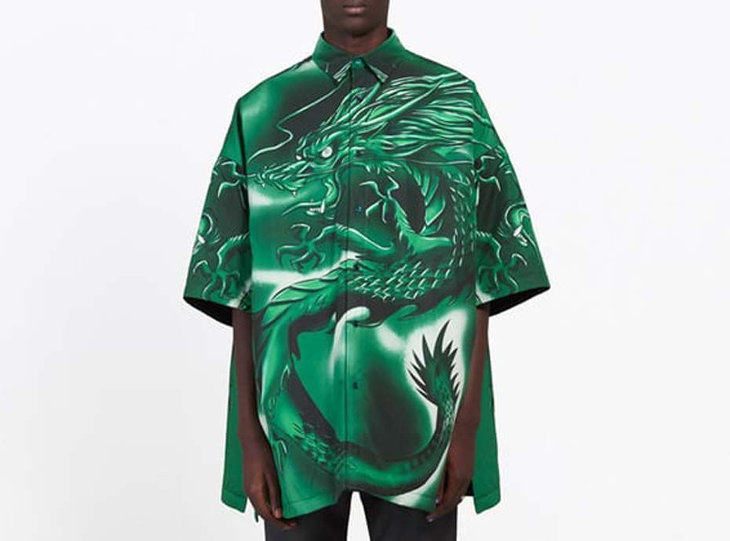
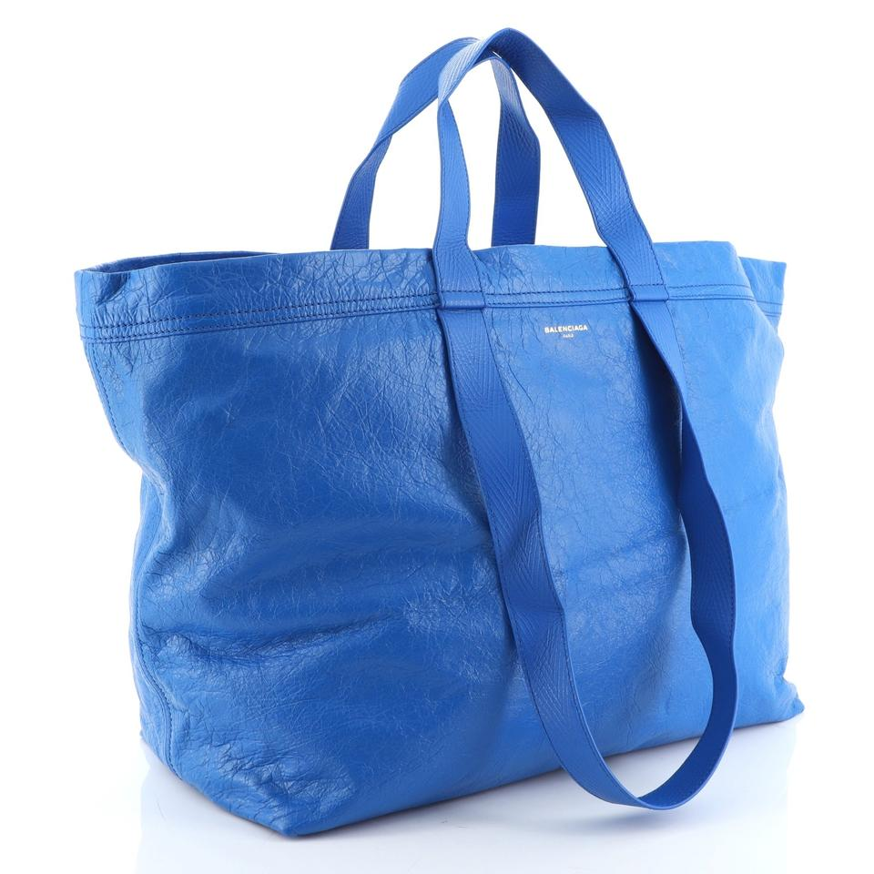
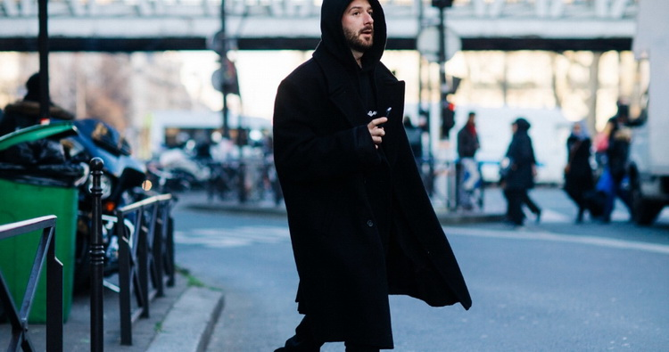
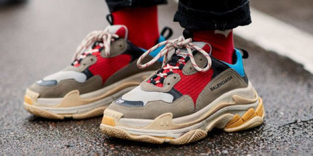
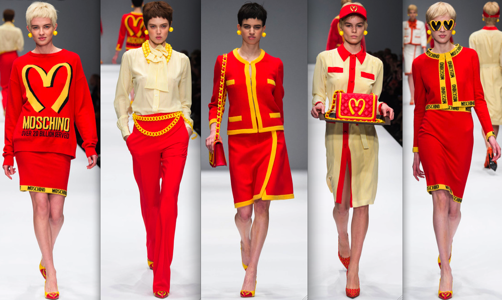

#inspiration
19 likes
8 shares
Dép lông, túi đi chợ, đồ ngủ, quần thể thao,…những món đồ nơi góc phố bình dân trở thành xa xỉ phẩm được bán với giá hàng nghìn euros. Chuyện gì đã xảy ra ?
Thời trang xấu xí bắt đầy đổ bộ mạnh mẽ từ khoảng năm 2017 - 2018. Những thứ vốn được coi là tầm thường, kém bắt mắt lần lượt được các nhà mốt lôi vào các bộ sưu tập và cho lên đời một cách đầy “chanh sả”.
Thời trang xấu xí có từ bao giờ?
Thời trang xấu xí (ugly chic) ra đời trên sàn catwalk vào năm 2013, khi những chiếc áo in hình nai Bambi của Riccardo Tisci (Givenchy) rất được săn đón, không lâu sau đó là đôi xăng đan kiểu Birkenstock (một nhãn hiệu giày dép kiểu ăn chắc mặc bền giống Bitis nhà ta hồi xưa) xuất hiện trong bộ sưu tập của Phoebe Philo (Céline). Sang năm 2014, chúng ta thấy hãng Loewe cho ra mắt một thứ tương tự đôi dép nhựa đi trong nhà và năm 2016, áo sơmi cây dừa Hawai lên sàn diễn của Magnum. Mốt mũ lưỡi trai trở lại rình rang sau bộ sưu tập xuân hè 2017 của Karl Lagerfeld (Chanel).
2017 cũng là năm Balenciaga. gây bão với chiếc túi giá hơn 2000 euros “bắt chước” túi đi chợ màu xanh của Ikea giá vài xu lẻ. Tuy nhiên đây không hẳn là một ý tưởng mới. Từ năm 1998, Margiela. đã làm một số mẫu túi có hình dáng giống cái phong bì, hộp đựng nhẫn và túi nhựa chống nước. Sau đó là túi dứa kẻ ô của Louis Vuitton. (2006), túi giấy đựng đồ ăn trưa Jill Sander. (2012), rồi túi nilon mua hàng của Comme des Garcons. được Chanel. lấy lại ý tưởng đưa vào bộ sưu tập 2014.
Demna Gvasalia, giám đốc sáng tạo của Balenciaga. từ 2015 và cũng là nhà đồng sáng lập thương hiệu Vetements. được coi gương mặt tiêu biểu dẫn đầu trào lưu này.
Nhà thiết kế người gốc Gregoria thích lấy cảm hứng từ mọi món đồ đời thường, dù chúng có xấu xí, lỗi thời thế nào đi nữa. Theo ông, thời trang xa xỉ không thể tách rời khỏi văn hóa đại chúng. Và kinh đô thời trang Paris không chỉ có sự nên thơ, thanh lịch mà chúng ta thường thấy, đó còn là thành phố của những “cửa hàng điện thoại, quán đồ ăn nhanh. Nơi sự quyến rũ đụng độ với quần jean bó sát và túi xách hàng fake… ”
Dù là đôi giày thể thao, chiếc chun buộc tóc hay quần legging, Demna. đều có thể đem “xào xáo” lại với sự táo bạo và mỉa mai. Demna. chẳng khác gì ông vua Midas chạm tay vào thứ gì là thành vàng, vì những món đồ đó tuy có hay gây tranh cãi nhưng được bán với giá cắt cổ, và giúp Balenciaga. thắng lợi giòn giã sau khoảng thời gian trầm lắng dưới thời người tiền nhiệm Alexander Wang.
Tại sao thời trang xấu xí lên ngôi?
Sự lên ngôi của thời trang xấu xí có thể là một sự phản ứng lại tốc độ điên cuồng của những buổi trình diễn và những bộ sưu tập. Hình thức See Now Buy Now (khách hàng có thể đặt mua ngay những món đồ được giới thiệu trên sàn diễn) đè nặng áp lực phải liên tục sáng tạo, đổi mới lên vai những nhà thiết kế. Trong lúc đó, họ lại có ít thời gian hơn để làm bộ sưu tập, mà vẫn phải đảm bảo mục tiêu về doanh số. Thời trang đã trở thành một ngành công nghiệp phàm ăn, khi tốc độ làm cạn kiệt sức sáng tạo.
Như một cách để ngầm châm biếm đòi hỏi ngày càng khắt khe, thiếu kiên nhẫn của người tiêu dùng, các thương hiệu xa xỉ đem quảng bá sự xấu xí nhằm thỏa mãn cơn khát những thứ mới lạ của công chúng.
"Thời trang là việc tìm kiếm những sự lố bịch mới"
Những quan điểm về thời trang cũng đang thay đổi. Thời trang giờ trở nên dân chủ hơn (dù vẫn còn một rào cản là giá cả), không màng đến những khuôn mẫu, định kiến đã ăn sâu từ nhiều thế kỉ nay. Những thứ như được nhặt từ xó xỉnh nào đó cũng có thể trở thành đẳng cấp nếu Rihanna hay Kendall Jenner diện chúng.
Ngoài ra, vòng quay thời trang thời gian gần đây tôn vinh những trào lưu của năm đầu 2000, từng được coi là đỉnh cao của sự xấu trong mắt của hậu thế. Vì thế, chúng ta thấy sự trở lại của bộ đồ nỉ hồng choé Juicy Couture giống style của Paris Hilton, quần áo bò như Justin Timberlake từng mặc thời còn ở trong Nsync hay chiếc mũ huyền thoại Von Dutch, chứng chỉ sành điệu của hội học sinh cấp 3 ngày nào.
Và nguyên nhân chính có lẽ đến từ đối tượng khách hàng hiện tại. Họ là những Millennials (sinh từ năm 1980 đến 1999), thuộc một thế hệ yêu thích văn hoá pop và street wear, mê dùng Instagram, quan tâm đến những cộng đồng/nhóm tiểu văn hoá và sẵn sàng lấy sự thiếu hoàn hảo thách thức những vẻ đẹp chuẩn mực. Giờ họ là đích nhắm đến của tất cả các nhà mốt đơn giản vì thời điểm này họ đã bắt đầu có tiếng nói riêng, có tầm ảnh hưởng trên mạng xã hội và trong lĩnh vực họ hoạt động. Gucci và Supreme là những trường hợp thành công rực rỡ gần đây khi quyến rũ được đối tượng này.
Sự xuất hiện của những món đồ xấu xí trên sàn catwalk lung linh nhắc nhở ta rằng thời trang nay chuyển động theo dòng xã hội, vượt ra những định nghĩa, quy tắc về thẩm mỹ mà giới quý tộc, tư sản tạo ra ngày xưa.
0 comment
19 likes
8 shares
0 comment